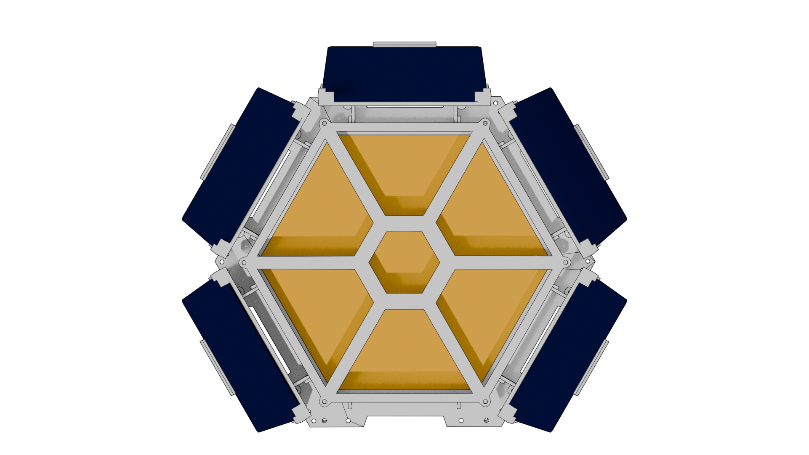
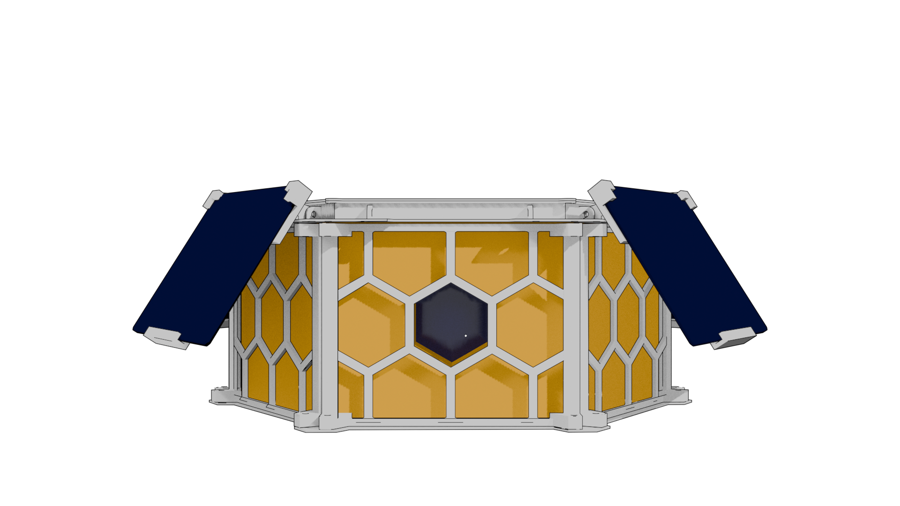
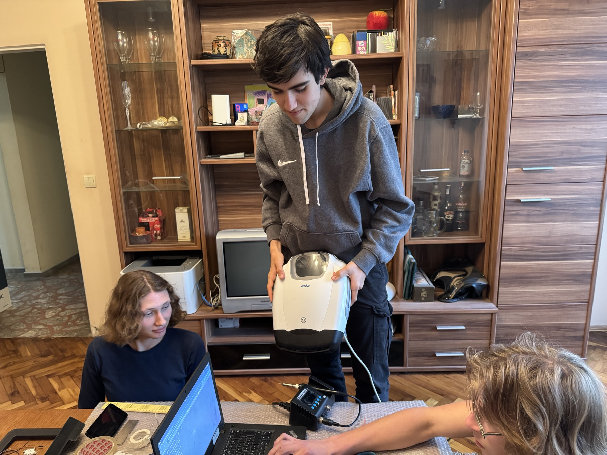
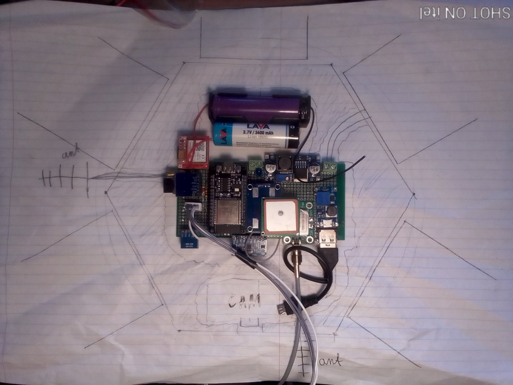
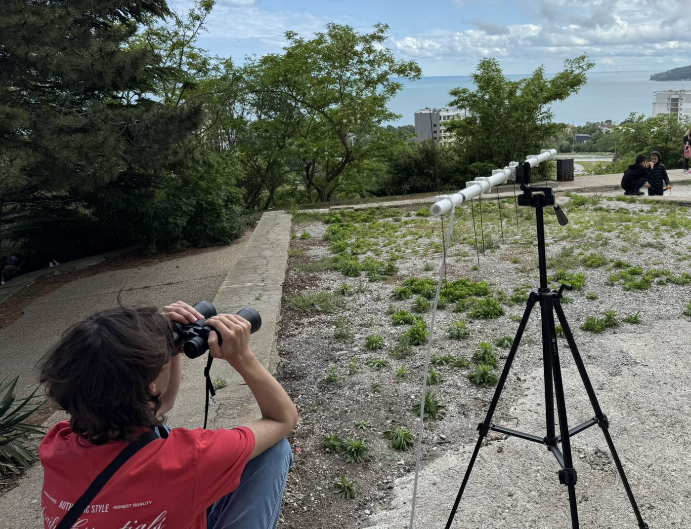
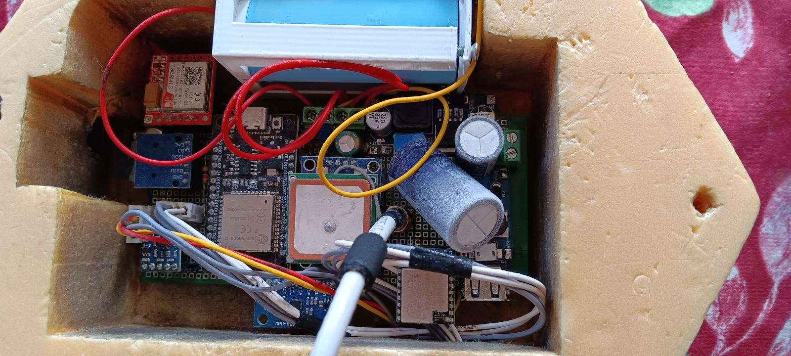
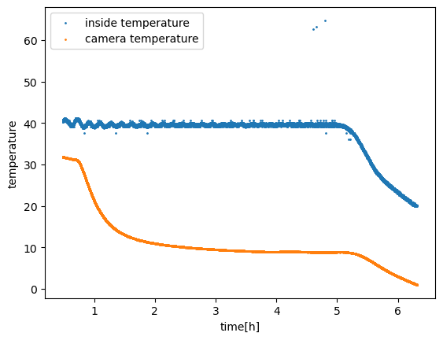
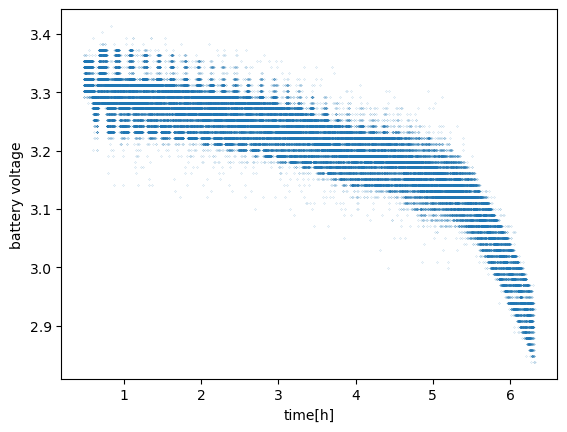

ПРОЕКТ "АВРОРА"
Ярослав Басков, Ая Франк, Николай Иванов, Иван Колев, Александър Станков
06.11.2024 - XX.07.2026
I Теоретична подготовка
1.1 Техническа задача
Целта на проекта е да се изгради сонда, която ще достигне височина 30 км за да изследва разпределението на прахови частици и други свойства на атмосферата.
Тя трябва да функционира поне 12 часа, да събира данни за околната среда, да ги запазва във вътрешен носител, както и да изпраща част от тях, за да не изгубим всичко, ако не намерим носителя. Данните трябва да са свързани с конкретна височина и местоположение, от което са получени. Също така е необходимо да знаем местоположението на сондата в реално време, поне когато е близо до земната повърхност, за да можем да я намерим.
Не на последно място е и желанието ни да изградим системата от масови и достъпни, а не специализирани компоненти, и да съберем всичко в един корпус.
1.2 Основни проблеми
Комуникация. Сондата цели да достигне височина 30 км - на такова разстояние от земята фактически няма мобилни мрежи, дори 2G. В същото време сондата може да измине няколкостотин километра по хоризонтала и да се отдалечи много от базата, което е сложна задача за директна LoRa комуникация.
Захранване. 12 часа автономност не е много за наземна инсталация, съдържаща единствено сензори и предавател, но освен, че стратосферата сонда трябва да бъде много лека, тя ще бъде изложена на температури до -60°C. Това не е проблем за повечето модули, но батериите губят почти цялата си ефективност при охлаждане. Слънчевите панели са добър вариант за стратосферата, където Слънцето грее по-силно, но са тежки, маломощни и изискват правилна ориентация.
Автономност. В стратосферата няма възможност за ремонт и дори рестартиране на сондата. Изпращането на команди също е трудна задача. Затова сондата трябва да е надеждна и да може самостоятелно да компенсира възможните неизправности, включително временно или постоянно изключване на сензори и други модули, загуба на обхват, ниски температури и нива на батерията.
1.3 Концепция на системата
Сондата е базирана на микроконтролера esp32. Оснастена е с базови сензори (барометър, хигрометър, външен и вътрешен термометър), IMU (акселерометър, жироскоп и магнитометър), сензор за прахови частици и GPS. Данните от магнитометъра и жироскопа се калибрират, другите сензори са калибрирани фабрично. На борда се намира малка камера захранвана от общ източник, но записваща върху собствена SD карта.
Част от събираните данни се изпращат по SMS с 2G модул SIM800L в формат JSON, и директно, чрез LoRa модул RA-01, като поредица от байтове, пренасяща само стойности в определен ред. За LoRa се използва Halo антена, понеже е всенасочена и с хоризонтална поларизация (по-добра за пренос на големи височини и разстояния). Приемника е оборудван с Яги-Уда антена, която е насочена и има много висок коефицент на усилване. Използвана е частота 433MHz, която е по-низката от достъпните за лична употреба. За насочването и е разработен софтуер, който пресмятва хоризонтални координати на сондата на спрямо нейното местоположение, височина и местоположение на наблюдателя.Също така те се записват на вътрешен носител – SD карта.
При падане на вътрешната температура под 0°C автоматично се задейства нагревател, направен от полиимиден филм, управляван с биполярен транзистор. Отоплението е нужно за да се осигури стабилна работа на всички системи и най-вече на батериите. При низко напрежение то се изключва за да пести енергия и да даде възможност по-важните модули да продължават да функционират.
За захранване се използват 3 LiFeP04 батерии с обща емкост XXXXmah. Те са по-тежки от Li-Ion батерии, но са по-устойчиви на външни условия, вкючително отрицателни температури. Също така те издържат много високи пикови токове, което е полезно за стабилизиране на напрежението, най-вече на мощните устройства, като LoRa модул и нагревател. Те дават стебилни 3.3V което е идеално за схемата. За да се минимизира риска на загуба на контрол върху сондата при задържане на кацането (поради неспукан балон) са използвани и 5 слънчеви панела. Всеки от тях дава по 1W максимална мощност. Разположени са в кръг за да има винаги поне 2, които да са обърнати челно към Слънцето, докато то е на около 30 градуса височина (Фиг.1., Фиг.2.).. Сондата е шестоъгълна, но едната страна е лишена от слънчев панел заради инсталирана камера. Общата мощност на слънчевите панели (2W) е достатъчна за захранване на цялата система без отоплението, но само при наличие на преки слунчеви лъчи, което не е сигурно в по-долната атмосфера. Схемата използва 4 нива на напрежение. Най-важното е 3.2-3.6V. То е свързано непосредствено с батериите и захранва повечето сензори, включително микроконтролера. То се стабилизира от голям електролитен кондензатор (3300μF), което е особено полезно за захранване на мощен и требователен към шума LoRa модул. Някои устройства използват 5V, които се осигуряват от повишаващ конвертор. Към това ниво са включени GPS, сензор за прахови частици PMSA, камерата (чрез USB) и нагревателя. Тъй като това ниво не е свързано непосредствено с батериите на него е поставен още по-голям кондензатор с емкост 4700μF. SIM800L модулът е оптимизиран за определен тип батерия с напрежение от 3.6 до 4.5V, което е далече и от двете използвани нива. Най лесният начин да се достигне този интервал е да се понижи 5V с помощта на диод. Ако диодът е достатъчно мощен, той ще може да пропуска високи токове и електролит на това ниво не е необходим. Слънчевите панели дават около 12V, но при низки температури и мощно слънчево греене в стратосферата напрежението може да достигне 14V и повече. Това не е проблем, понеже понижаващият преобразувател дава стабилни 3.6V на изхода независимо от входното напрежение. Свързан е със батериите и дава ток винаги, когато те не са заредени на 100%.

Фиг.1. 3D модел на сондата, вид отгоре.

Фиг.2. 3D модел на сондата, вид отпред.
II Прaктическа реализация
2.1 Свързване на компонените
Сондата многократно претърпяваше промени и подобрения (Фиг.3.), а само един прототип бива произведен, затова създаване на печатна платка беше неоптимално. В същото време временните връзки с breadboard и jumper wires са нестабилни и не осигуряват надежна работа без постоянна поддръжка. Затова детайлите са запоени за готов перфориран текстолит и свързани с кабели от другата страна. Този метод позволява лесна промяна на схемата, но в същото време осигурява стабилен контакт, дори в екстремни условия. Компоненти, които се очаква да се премахват или сменят по време на разработка и тестване са закрепени за платката не директно, а с рейки. Това свързване е подобно на jumper wires, но благодарение на твърдостта си са много по-надежни. Детайлите, които се закрепват не с пинове, а с кабели (батерии и слънчеви панели) са свързани с останалате чрез клеми с винтове, които хем осигуряват надеждност и низко съпротивление, хем позволява да се отсъединяват и сменят при тестване и доработка.

Фиг.3.Процес на работа по сондата.
2.2 Комуникация между модулите
В проекта се използват 3 шини: UART, SPI и I2C. Първата шина е ограничена с това, че може да използва само едно устройство, но е надеждна и лесна за използване. ESP32 има 3 UART модула. И трите са заети от GPS, PMSA и SIM800L. Нулевият порт се използва и за комуникация с компютъра, за което сензора за прахови частици временно се отстранява. SPI шината позволява включване на повече устройства, но използва минимум 4 пина от платката. Изисква и прецизност при превключване на контролираното устройство. Към тази шина са свързани SD картата и LoRa модула. В началото на работния процес са възниквали конфликти между двете устройства поради липса на комуникация между библиотеките, но тези недостатъци са били оправени ръчно. Повечето сензори комуникират с контролера с помощта на шината I2C. Шината използва само два пина и позволява свързване на много устройства помежду си. За работа с всяко от устройствата има написани библиотеки. Единственният проблем там беше незнанието ми за необходимост от pullup резистори.
2.3 Връзка с базата
Както е споменато по-горе тя се осъществява по 2 начина – чрез модул SIM800L и чрез LoRa модул. Първият изисква 2G обхват. В България 2G е достъпно почти навсякъде, но почти напълно липсва на височина над 5-10км. Това е перфектен начин да намерим сондата след кацане незавизимо от разстоянието на което се намира. За да получим максимален обхват използваме вертикално разположена диполна антена изнесена извън корпуса. Този модул изисква и SIM карта за достъп до мобилните услуги. Предплатената тарифа е евтина но ограничава брой изпратени SMS. Тарифата с неограничени SMS е скъпа и абонамента се купува за две години напред, затова вместо да купуваме абонамент, ще използваме временно SIM картата на един от участниците на екипа. Данните ше пристигат на телефона на друг участник.
Самият модул се оказа не много удобен за работа, понеже изплозва нестандартно напрежение и консумира голям ток в определени моменти. Първо време той не успяваше да намери мобилна мрежа и очаквах той да е дефектен. Но след като подадох правилно напрежение и свързах кондензатор се оказа, че проблемът беше единствено в захранването.
Втория начин е с LoRa модул. При него данните се приемат непосредственно от идентичен модул на наземната база. За осигуряване на максимална шумоустойчивост и надеждност на връзката се използва най-ниска скорост на предаване, при която един пакет данни от 111 байта се предава за 13 секунди. При текущото законодателство в българия това означава, че ще можем да предаваме съобщение на около 2 минути. Такъв подход обаче ще позволи да имаме връзка със стратостата на разстояние 100-200 километра при условие на пряка видимост независимо от височината. За предаване се използва ръчно изработена halo антена. Благодарение на всенасочеността и и хоризонталната и поляризация ние можем да имаме връзка със сондата по всяко време и на големи разстояния. Единственният проблем е че сигнала непосредствено под сондата е по-слаб. Но в такъв случай и разстоянието до нея няма да надвишава 30 километра.
За визуализация и споделяне на получените данни е създаден уебсайт който съдържа графики и анимации за движението на сондата. Също така той позволява изтегляне на досега получените данни в удобен формат от всеки потребител.
2.4 Геолокация
За разлика от много стратосферни проекти използващи готови трекери, в нашата сонда GPS модула е част от системата, която показва местоположение само на микроконтролера, вместо да го изпраща веднага до базата. Координатите на сондата пристигат в общия пакет с данни. Освен, че този подход е по-евтин, той позволява геотагинг на събираните данни и използване на вече съществуващи канали за пренос на информация, а също така намалява сложността, обема, теглото и енергийния разход на конструкцията.
Оказа се, че евтините GPS модули работят само при ясно небе (и докато не го разбрахме се опитвахме да го оправим по всевъзможни начини). Това не е проблем, защото в по-голямата част от полета сондата ще се намира над плътните облачни слойове, а след кацането сондата ще може да работи дълго време, докато небето се изясни, защото при положителна външна температура енергийният разход е нисък.
2.5 Корпус
Гореспоменатите компоненти обаче няма да висят във въздуха в непосредствен контакт с агресивната околна среда. Те са опаковани в добре топлоизолиран шестоъгълен корпус, направен от стиропор. Изграден е от три слоя: горният и долният са плътни шестоъгълници, а средният в средата си има място за самите електронни схеми и отделна ниша с прозорец за камерата (Фиг.7.). Слойовете са изготвени чрез рязане с нагорещена тел по 2d шаблон, което е евтин, лесен и точен метод за изготвяне на подобни детайли. Двата долни слоя са залепени един за друг, докато горния се притиска към тях с разглобяем 3д принтиран външен каркас, за който, освен това са закремени всички въжета, сензори и слънчеви панели. Тази конструкция има минимален брой детайли и съединения, което я прави по-надеждна и херметична. Центъра на тежестта и позволява дори да плава дълго време при водно кацане.

Фиг.7. Разположение на компонентите в корпуса.
Шестоъгълната и форма е свързана както с вътрешното разпложение на компонентите, така и с разположение на слънчевите панели. Те са закрепени в кръг, под ъгъл 60 градуса към хоризонта, за да са насочени визможно най-пряко към Слънцето (Фиг.1., Фиг.2.). Долната страна на контейнера не се използва, за да не се повреди сондата при кацане. 2G антената е разположена отстрани, което е свързано по-скоро с надеждността на закрепването, а Halo антената е закрепена отгоре на височина 15см от сондата, за да може да излъчва във всички посоки странично и да не се влияе от другите компоненти. Термометъра, барометъра и сензора за прахови частици са залепени на горната страна на сондата.
III Тестване
3.1 Тестване на връзката
За да се провери, дали връзката е достатъчно стабилна и качествена за отдалечаване на много километра е проведена серия тестове. Провеждаха се между две точки: фар Галата и съветския паметник в квартал Почивка, г.Варна. Между тях има пряка видимост и разстояние 6 километра (Фиг.6.). Преди хало антената използвахме дипол за LoRa модула, но още при първото тестване установихме, че хоризонталната поляризация печели няколко децибела. Мощността на сигнала на това разстояние с хало антената се оказа около -100dbm. С теоретична чувствителност -140dbm нашият модул би могъл да хваща сигнал на разстояние до 600 км, което е напълно достатъчно за целите ни. При тестване в дъждовен ден се установи че мъглата и дъжда не влияят негативно на сигнал с частота 433MHz. Освен LoRa модула е проверена работата на сенсорите и GPS, които стабилно предаваха данни към приемника.

Фиг.6. Приемникът по време на второто тестване на връзката.
3.2 Тестване на отоплението
За да се провери автономността на системата тя беше поставена във фризер (Фиг.8.). За да се имитира реалистична температурна разлика (от -60°C до 0°C) при температура в фризера -20°C отоплението беше настроено да поддържа +40°C в сондата. Теста се проведе с 2 а не 3 батерии. При първия тест температурата не се повиши над 33°C, което при външна температура -60°C би дало -7°C. Очевидно отоплението не беше достатъчно мощно, защото беше свързано с 3.3V ниво. Това решение беше свързано с нежеланието ми да пускам големи мощности през повищавашия конвертор. В крайна сметка съм свързал нагревателя към 5 волта и системата е останала стабилна, а отоплението – достатъчно мощно. Дори да има загуби в повишаващия конвертор, те се превръщат изцяло в топлина, което намалява времето на работа на нагревателя. С 2 батерии при температурна разлика 60°C сондата издържа около 6 часа (Фиг.4., Фиг.5.).
2 * 4,5Ah * 3.2V / 6h = 4.8W.
Ако слънчевите панели функционират, а батриите са три сондата би издържала:
3 * 4.5Ah * 3.2V / (4.8W - 2 W) = 15.4 часа.
Очакваното време на полет е около 12 часа. Имайки предвид, че температурната разлика през повечето време ще е по-малка от 60°C, а при по-ниска плътност на въздуха топлообмена е намален средната мощност на отоплението ще е по-низко и времето за автономност – по дълго. Тъй като при разредена батерия нагревателя се изключва, на теория сондата би трябвало да може да функционира неограничено време, но нестабилно и с опасност за батериите.

Фиг.8. Сондата отвътре, след престой във фризера до пълно изключване.

Фиг.4. Изменение на температурата в сондата при тестване на отоплението.

Фиг.5. Изменение на напрежението в сондата при тестване на отоплението.
Заключение
Разработката и изграждането на тази стратосферна сонда представляват комплексен инженерен процес, който успешно обединява достъпни технологии с иновативни решения за работа в екстремни условия. Чрез внимателно планиране на хардуерната архитектура и софтуерната логика бе постигнат баланс между функционалност, надеждност и икономическа ефективност. Изборът на LiFePO4 батерии в комбинация с активна отоплителна система и слънчеви панели решава един от най-големите критични проблеми на височинните мисии – енергийната автономност при температури до -60°C.
Интегрирането на двойна комуникационна система чрез LoRa и GSM осигурява не само непрекъснат поток от данни по време на полета в реално време, но и сигурност при локализирането на сондата след нейното приземяване. Използването на специализирани антени като Halo и Yagi-Uda компенсира трудностите при предаване на големи разстояния и специфичните изисквания за поляризация. Резултатите от предварителните наземни тестове потвърждават, че избраните методи за термоизолация и предаване на данни са стабилни, а модулният подход на изграждане позволява гъвкавост и устойчивост на механични натоварвания.
Проектът доказва, че със съвременни микроконтролери като ESP32 и прецизно калибрирани сензори е напълно възможно да се провеждат научни изследвания на границата между атмосферата и Космоса. Създадената платформа не е просто изследователски инструмент, а работещ модел за автономна система, способна да функционира в агресивна среда. Постигнатите резултати полагат солидна основа за бъдещи експерименти, свързани с мониторинг на околната среда и анализ на въздушните маси на големи височини, като същевременно демонстрират висока степен на инженерна адаптивност.
PROJECT "AURORA"
Iaroslav Baskov, Aya Frank, Nikolay Ivanov, Ivan Kolev, Aleksandar Stankov
06.11.2024 - XX.07.2026
I Theoretical Preparation
1.1 Technical Task
The goal of the project is to build a probe that will reach an altitude of 30 km in order to study the distribution of dust particles and other properties of the atmosphere.
It must function for at least 12 hours, collect environmental data, save it to an internal carrier, and transmit part of it so that we do not lose everything if the carrier is not recovered. The data must be linked to a specific altitude and location from which it was obtained. It is also necessary to know the location of the probe in real-time, at least when it is close to the Earth's surface, so that it can be found.
Last but not least is the desire to build the system from mass-market and accessible components, rather than specialized ones, and to assemble everything in a single housing.
1.2 Main Problems
Communication. The probe aims to reach an altitude of 30 km - at such a distance from the ground, there are effectively no mobile networks, not even 2G. At the same time, the probe can travel several hundred kilometers horizontally and move very far from the base, which is a complex task for direct LoRa communication.
Power Supply. 12 hours of autonomy is not a lot for a ground installation containing only sensors and a transmitter, but besides the fact that the stratospheric probe must be very light, it will be exposed to temperatures down to -60°C. This is not a problem for most modules, but batteries lose almost all their efficiency when cooled. Solar panels are a good option for the stratosphere, where the Sun shines more intensely, but they are heavy, low-power, and require correct orientation.
Autonomy. In the stratosphere, there is no possibility for repair or even restarting the probe. Sending commands is also a difficult task. Therefore, the probe must be reliable and able to independently compensate for possible malfunctions, including the temporary or permanent shutdown of sensors and other modules, loss of range, low temperatures, and low battery levels.
1.3 System Concept
The probe is based on the esp32 microcontroller. It is equipped with basic sensors (barometer, hygrometer, external and internal thermometer), an IMU (accelerometer, gyroscope, and magnetometer), a dust particle sensor, and GPS. Data from the magnetometer and gyroscope are calibrated, while other sensors are factory-calibrated. A small camera is on board, powered by a common source but recording onto its own SD card.
Part of the collected data is sent via SMS using a SIM800L 2G module in JSON format, and directly via an RA-01 LoRa module as a sequence of bytes, carrying only values in a specific order. A Halo antenna is used for LoRa because it is omnidirectional and horizontally polarized (better for transmission at high altitudes and long distances). The receiver is equipped with a Yagi-Uda antenna, which is directional and has a very high gain coefficient. A frequency of 433MHz is used, which is the lower of those available for personal use. Software was developed for its alignment, which calculates the horizontal coordinates of the probe relative to its location, altitude, and the observer's location. Data is also recorded on an internal carrier – an SD card.
When the internal temperature drops below 0°C, a heater made of polyimide film, controlled by a bipolar transistor, is automatically activated. Heating is necessary to ensure stable operation of all systems, particularly the batteries. At low voltage, it switches off to save energy and allow the more critical modules to continue functioning.
Three LiFePO4 batteries with a total capacity of XXXXmAh are used for power. They are heavier than Li-Ion batteries but are more resistant to external conditions, including negative temperatures. They also withstand very high peak currents, which is useful for stabilizing the voltage, especially for high-power devices like the LoRa module and heater. They provide a stable 3.3V, which is ideal for the circuit. To minimize the risk of losing control of the probe if the landing is delayed (due to an unburst balloon), 5 solar panels are used. Each provides 1W of maximum power. They are arranged in a circle so that at least 2 are always facing the Sun directly while it is at about 30 degrees altitude (Fig.1, Fig.2). The probe is hexagonal, but one side lacks a solar panel due to the installed camera. The total power of the solar panels (2W) is sufficient to power the entire system without heating, but only in direct sunlight, which is not guaranteed in the lower atmosphere. The circuit uses 4 voltage levels. The most important is 3.2-3.6V. It is connected directly to the batteries and powers most sensors, including the microcontroller. It is stabilized by a large electrolytic capacitor (3300μF), which is particularly useful for powering the power-hungry and noise-sensitive LoRa module. Some devices use 5V, provided by a step-up converter. This level powers the GPS, PMSA dust particle sensor, the camera (via USB), and the heater. Since this level is not directly connected to the batteries, an even larger capacitor with a capacity of 4700μF is placed there. The SIM800L module is optimized for a specific type of battery with a voltage of 3.6 to 4.5V, which is far from both used levels. The easiest way to reach this range is to lower the 5V using a diode. If the diode is powerful enough, it can handle high currents, and an electrolytic capacitor on this level is not necessary. Solar panels provide about 12V, but at low temperatures and intense solar radiation in the stratosphere, the voltage can reach 14V or more. This is not a problem, as the buck converter provides a stable 3.6V output regardless of the input voltage. It is connected to the batteries and provides current whenever they are not 100% charged.
Fig.1. 3D model of the probe, top view.
Fig.2. 3D model of the probe, front view.
II Practical Implementation
2.1 Component Wiring
The probe underwent multiple changes and improvements (Fig.3), and since only one prototype was produced, creating a printed circuit board was suboptimal. At the same time, temporary connections with breadboards and jumper wires are unstable and do not ensure reliable operation without constant maintenance. Therefore, components are soldered onto a ready-made perforated protoboard and connected with wires on the back. This method allows for easy circuit changes while ensuring stable contact, even in extreme conditions. Components expected to be removed or replaced during development and testing are attached to the board with headers rather than directly. This connection is similar to jumper wires but is much more reliable due to its rigidity. Parts attached with cables (batteries and solar panels) are connected via screw terminals, which provide reliability and low resistance while allowing them to be disconnected and replaced during testing and modification.
Fig.3. Work process on the probe.
2.2 Communication Between Modules
Three buses are used in the project: UART, SPI, and I2C. The first bus is limited to a single device but is reliable and easy to use. The ESP32 has 3 UART modules. All three are occupied by the GPS, PMSA, and SIM800L. Port zero is also used for communication with a computer, for which the dust particle sensor is temporarily removed. The SPI bus allows multiple devices to be connected but uses a minimum of 4 pins. It also requires precision when switching the controlled device. The SD card and LoRa module are connected to this bus. Early in the process, conflicts arose between the two devices due to a lack of communication between libraries, but these were manually fixed. Most sensors communicate with the controller via the I2C bus. The bus uses only two pins and allows many devices to be connected together. Libraries have been written for each device. The only problem there was a lack of knowledge regarding the need for pull-up resistors.
2.3 Connection to Base
As mentioned above, this is carried out in two ways – via the SIM800L module and via the LoRa module. The first requires 2G coverage. In Bulgaria, 2G is available almost everywhere but is almost completely absent at altitudes above 5-10km. This is a perfect way to find the probe after landing, regardless of the distance. To achieve maximum range, we use a vertically oriented dipole antenna mounted outside the housing. This module requires a SIM card for access to mobile services. The prepaid tariff is cheap but limits the number of sent SMS. A tariff with unlimited SMS is expensive and requires a two-year subscription, so instead of buying a subscription, we temporarily use a team member's SIM card. Data arrives on another participant's phone.
The module itself proved difficult to work with as it uses a non-standard voltage and consumes high current at certain moments. At first, it failed to find a mobile network, and I suspected it was defective. However, after supplying the correct voltage and connecting a capacitor, it turned out the problem was solely the power supply.
The second method is with the LoRa module. Data is received directly by an identical module at the ground base. To ensure maximum noise resistance and link reliability, the lowest transmission speed is used, where a single 111-byte data packet takes 13 seconds to transmit. Under current Bulgarian legislation, this means we can transmit a message roughly every 2 minutes. This approach allows a connection with the stratostat at a distance of 100-200 km under direct line-of-sight, regardless of altitude. A handmade Halo antenna is used for transmission. Thanks to its omnidirectionality and horizontal polarization, we can maintain a connection at any time and over long distances. The only problem is that the signal directly below the probe is weaker, but in that case, the distance to it would not exceed 30 km.
To visualize and share the received data, a website was created containing graphs and animations of the probe's movement. It also allows any user to download the data received so far in a convenient format (Fig.9, Fig.10).
2.4 Geolocation
Unlike many stratospheric projects that use ready-made trackers, in our probe, the GPS module is part of the system, showing the location only to the microcontroller instead of sending it immediately to the base. The probe's coordinates arrive in the general data packet. Besides being cheaper, this approach allows for geotagging of collected data and uses existing communication channels, while also reducing the complexity, volume, weight, and energy consumption of the construction.
It turned out that cheap GPS modules only work under clear skies (and until we realized this, we tried to fix it in every possible way). This is not a problem because for most of the flight, the probe will be above thick cloud layers, and after landing, the probe can operate for a long time until the sky clears, as energy consumption is low at positive external temperatures.
2.5 Housing
The components mentioned above will not hang in the air in direct contact with the aggressive environment. They are packed in a well-insulated hexagonal housing made of styrofoam. It is constructed from three layers: the top and bottom are solid hexagons, while the middle layer has a cavity for the electronic circuits and a separate niche with a window for the camera (Fig.7). The layers were made by hot-wire cutting using a 2D template, which is a cheap, easy, and accurate method for producing such parts. The two bottom layers are glued together, while the top one is pressed against them by a detachable 3D-printed external frame, to which all ropes, sensors, and solar panels are attached. This construction has a minimum number of parts and joints, making it more reliable and airtight. Its center of gravity even allows it to float for a long time during a water landing.
Fig.7. Arrangement of components inside the housing.
Its hexagonal shape is related both to the internal layout of components and the placement of the solar panels. They are fixed in a circle at a 60-degree angle to the horizon to be aimed as directly as possible at the Sun (Fig.1, Fig.2). The bottom of the container is not used to prevent damage to the probe upon landing. The 2G antenna is located on the side for mounting reliability, while the Halo antenna is fixed on top at a height of 15cm from the probe to radiate sideways in all directions without interference from other components. The thermometer, barometer, and dust particle sensor are glued to the top of the probe.
III Testing
3.1 Connection Testing
To check if the connection is stable and high-quality enough for long distances, a series of tests were conducted. These took place between two points: Galata Lighthouse and the Soviet Monument in the Pochivka district, Varna. There is a direct line-of-sight between them and a distance of 6 km (Fig.6). Before the Halo antenna, we used a dipole for the LoRa module, but during the first test, we found that horizontal polarization gained several decibels. The signal strength at this distance with the Halo antenna was about -100dBm. With a theoretical sensitivity of -140dBm, our module could pick up a signal at a distance of up to 600 km, which is entirely sufficient for our goals. Testing on a rainy day established that fog and rain do not negatively affect the 433MHz signal. In addition to the LoRa module, the operation of the sensors and GPS was verified, stably transmitting data to the receiver.
Fig.6. The receiver during the second connection test.
3.2 Heating System Testing
To verify the system's autonomy, it was placed in a freezer (Fig.8). To simulate a realistic temperature difference (from -60°C to 0°C) with a freezer temperature of -20°C, the heating was set to maintain +40°C inside the probe. The test was conducted with 2 instead of 3 batteries. In the first test, the temperature did not rise above 33°C, which at an external temperature of -60°C would result in -7°C. Clearly, the heating was not powerful enough because it was connected to the 3.3V rail. This decision was based on a reluctance to run high power through the step-up converter. Eventually, I connected the heater to 5V, and the system remained stable while the heating became sufficiently powerful. Even if there are losses in the step-up converter, they are converted entirely into heat, which reduces the heater's operating time. With 2 batteries and a temperature difference of 60°C, the probe lasted about 6 hours (Fig.4, Fig.5).
2 * 4.5Ah * 3.2V / 6h = 4.8W.
If the solar panels function and three batteries are used, the probe would last:
3 * 4.5Ah * 3.2V / (4.8W - 2W) = 15.4 hours.
The expected flight time is about 12 hours. Considering that the temperature difference will be less than 60°C most of the time, and at lower air density heat exchange is reduced, the average power of the heating will be lower and the autonomy time longer. Since the heater turns off when the battery is low, in theory, the probe could function indefinitely, though unstable and with a risk to the batteries.
Fig.8. Interior of the probe after staying in the freezer until complete shutdown.
Fig.4. Changes in the probe's internal temperature during heating system testing.
Fig.5. Changes in the probe's voltage during heating system testing.
Conclusion
The development and construction of this stratospheric probe represent a complex engineering process that successfully combines accessible technologies with innovative solutions for operation in extreme conditions. Through careful planning of the hardware architecture and software logic, a balance between functionality, reliability, and economic efficiency was achieved. The choice of LiFePO4 batteries in combination with an active heating system and solar panels solves one of the most critical problems of high-altitude missions – energy autonomy at temperatures down to -60°C.
The integration of a dual communication system via LoRa and GSM ensures not only a continuous flow of real-time data during flight but also security in locating the probe after landing. The use of specialized antennas like the Halo and Yagi-Uda compensates for the difficulties of long-distance transmission and specific polarization requirements. Results from preliminary ground tests confirm that the chosen methods for thermal insulation and data transmission are stable, and the modular approach to construction allows for flexibility and resistance to mechanical stress.
The project proves that with modern microcontrollers like the ESP32 and precisely calibrated sensors, it is entirely possible to conduct scientific research at the edge of space. The created platform is not just a research tool but a working model for an autonomous system capable of functioning in an aggressive environment. The achieved results lay a solid foundation for future experiments related to environmental monitoring and air mass analysis at high altitudes, while demonstrating a high degree of engineering adaptability.